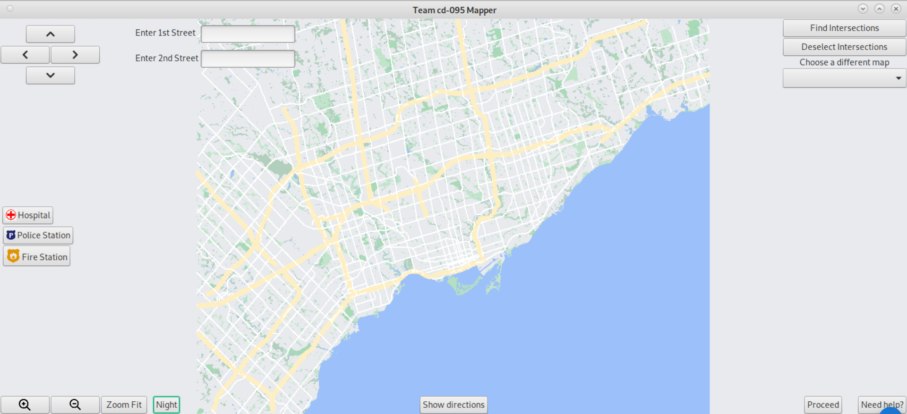
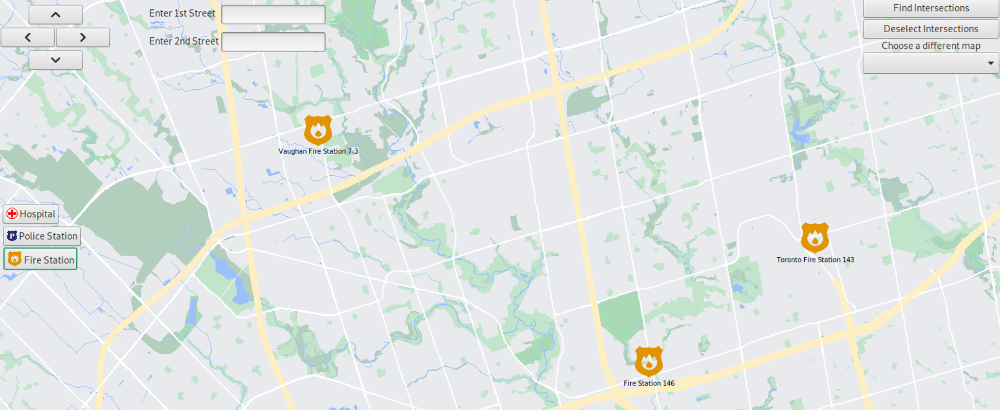
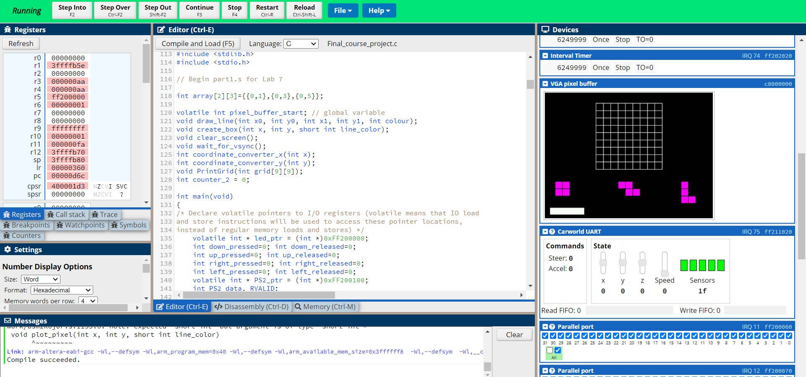
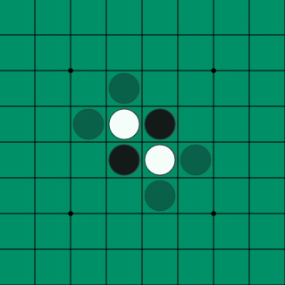

1. GIS

Worked in a team of three to create a Geographic Information System using OSMDatabaseAPI, StreetDatabaseAPI and Implemented a graphical user interface using GTK.
The map was created to be used in case of emergencies. Using the toggle buttons on the left allows you to view all the hospitals, police stations or fire stations in cities around the world.
Other features including night mode and an autocomplete search bar were implemted as well.
To view more about the uses and features of the map, kindly refer to this Presentation.
Libraries used: GTK, STL, Libcurl.
Ideas implemented: Spatial Hashing, Frustum culling, Multithreading, Dijkstra's algorithm.
2. Blockudoku

Recreated the game ‘Blockudoku’ (a combination of Tetris and Sudoku) in C.
How it works:
BlockuDoku is a combination of sudoku and a block puzzle game. You can drag and drop
randomly generated block shapes into a 9x9 grid and earn points for clearing a 3x3 grid or 9
block line by filling it in with the blocks. These blocks in the grid will disappear when cleared and
the game continues.
Running the program displays a 9x9 grid with three randomly generated shapes shown below.
The user is able to move between the shapes using the left and right arrow keys on their
keyboard and select the shape by clicking the up arrow key. Then, the user is shown all possible
locations the shape can be inserted into in the grid. The user can choose between possible
locations using the left and right arrow keys and select the required location by using the up
arrow key.
Clearing the grid earns the user points. These points are displayed on the terminal.
The game ends when there is no more space in the grid for the user to insert shapes into.
A ‘Game Over’ message is displayed in the terminal when this happens.
Ideas implemented: Double buffering, sprite creation, PS2 button key usage, Seven Segment HEX display usage.
3. Reversi AI
Created reversi using C. Implemented both two player and one player modes to it.
Created an AI that could find optimal moves to play using ideal reversi strategy.
Other projects
1. Created a personal music library in C using linked lists.
2. Enhanced a program that can store, manipulate, and draw a database of shapes using inheritance and virtual functions in C++.
3. Created a command line parser to modify a linked list of shapes in C++.